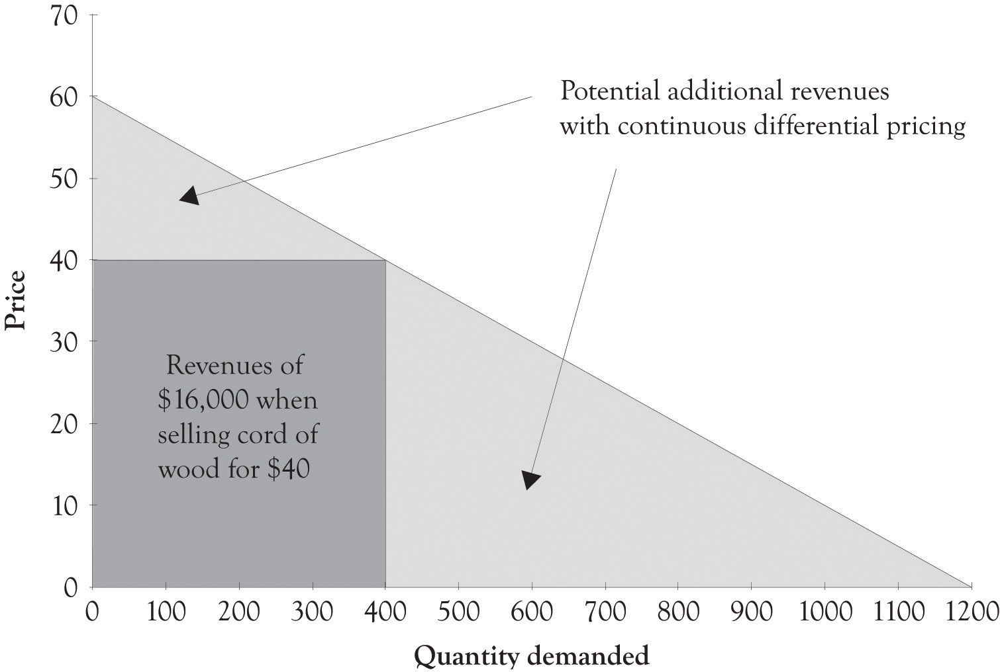
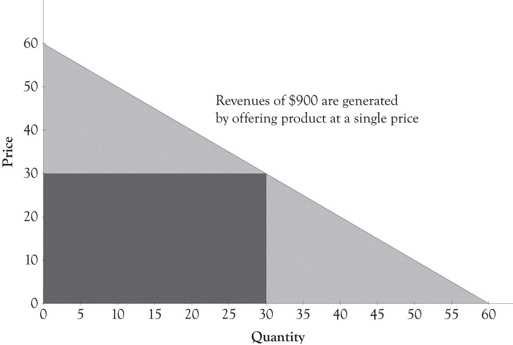
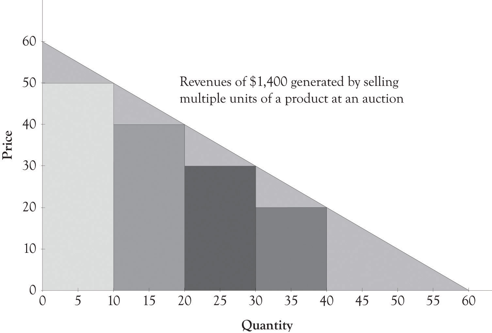

First-degree price discriminationAn attempt to charge different prices to different customers for the same product. has been around ever since people began bartering and exchanging goods.Lipsey and Chrystal (2007). It is simply an attempt to charge different prices to different customers for the same product. Figure 2.1 "Need a Way to Capture Additional Revenue" presents an example of an aggregate demand curve for a cord of wood in a small town. In an ideal world, from the producer’s perspective, one producer could identify each consumer’s willingness-to-pay function and set prices accordingly (cf. Varian 1996). Let us assume that one company owns all of the timber in the area and is therefore a monopoly. Instead of charging $40 to each consumer, the monopolist charges a different price to each consumer depending on their ability and willingness to pay for the cord of wood. This is essentially personalized pricingWhere the selling price is customized for each buyer., where the selling price is customized for each buyer. This is a good strategy for a monopolist because they can generate more revenue than just picking a single price point. Each consumer is thus charged a different price for the same product.Charging different prices according to the consumer’s willingness-to-pay.
Figure 2.1 Need a Way to Capture Additional Revenue
This strategy is also known as perfect price discrimination. Personalized pricing is very difficult to implement in practice for four reasons. First, it is difficult to identify the willingness-to-pay functions for each consumer. Second, customers often get upset when they find out that another consumer has paid less for a product or service than they have paid. The third reason that personalized pricing causes problems is that perfect price discrimination can lead to arbitrage, where opportunistic buyers purchase the product at a discounted price in one market and then sell it at a profit in another market. The fourth and final reason that it is difficult to implement is that, in certain instances, it is illegal. This issue will be dealt with at the end of the chapter.
Though personalized pricing is difficult to implement, it can be accomplished and is in fact embraced by some companies. Amazon, for example, presents their customers with personalized product recommendations using past search and buying behavior, and large supermarkets use their scanner data to configure promotions tailored to their customers.
Personalized pricing requires the effective measurement of consumer preferences. The supplier must in some way conduct market research to determine individualized pricing strategies. This can be accomplished by using technology to analyze historical buying patterns. Online retailers, such as Amazon, can very easily analyze transactions using historical data. Offline retailers have to collect and sort the data from a variety of sources unless their customers participate in a rewards program or a customer discount program that incorporates a mechanism for gathering customer transaction information. Amazon has participated in many of types of personalized marketing and pricing schemes because they have the infrastructure in place to gather and analyze behavior. Companies such as Amazon use some form of collaborative filteringTechniques that identify information that a user might be interested in. to determine product recommendations for books, videos, and many other products.
There are many ways to implement collaborative filtering. Collaborative filtering goes something like this. John likes audio books by David Sedaris. Other people who have bought audio books by David Sedaris also bought books by George Carlin. Therefore, the so-called recommender system at Amazon or at Audible books would make a recommendation to John that he should buy a book by George Carlin. Collaborative filtering systems can also include rating systems; in fact, Amazon and a number of other online retailers will try very hard to get you to help them by asking you to rate a product you have just bought. They will use the ratings to develop an entire web of recommendations to many of their customers and to retarget you with similar products. Here is another example of collaborative filtering in action: John bought and gave his new Kindle e-book reader a five star rating. He and many other buyers of the Amazon Kindle also bought a leather case. The recommender system will subsequently recommend a leather case to everyone who subsequently buys the Kindle.
Collaborative filtering can also involve price differentiation and price personalization. If the person who buys the Kindle does not buy the leather case at the same time, then the recommender system will send an email indicating that the leather case is on sale or wait until the Kindle customer logs back onto the system and then presents the customer with a discounted price on the leather case.
Auctions are also a form of personalized pricing. Theoretically, an auction participant will bid up to their reservation priceThe price that a consumer is willing to pay. or their willingness-to-pay level for a product. Figure 2.2 "Revenues Derived by Selling a Product at a Single Price" illustrates that the revenue generated by offering a product at a single price of $30 will generate $900 in revenues. As illustrated in Figure 2.3 "Auctions Can Be Used for Personalized Pricing", the use of an auction could theoretically generate revenues of $1,400. Auctions permit sellers to price discriminate according to the customers’ willingness-to-pay. Some individuals will bid $10 or $20 and others will bid $30, or $40 or more. As a result, a seller could theoretically generate additional revenues of $500 by offering multiple units of a product at an auction. The next chapter will illustrate in detail how this revenue is generated using versioning.
Figure 2.2 Revenues Derived by Selling a Product at a Single Price
Figure 2.3 Auctions Can Be Used for Personalized Pricing
Developing personalized pricing is an idealized goal for producers because the potential opportunities for revenue generation are exceptional. However, because it is difficult to accomplish in practice, producers often turn toward second- and third-degree price discrimination to generate additional revenues.